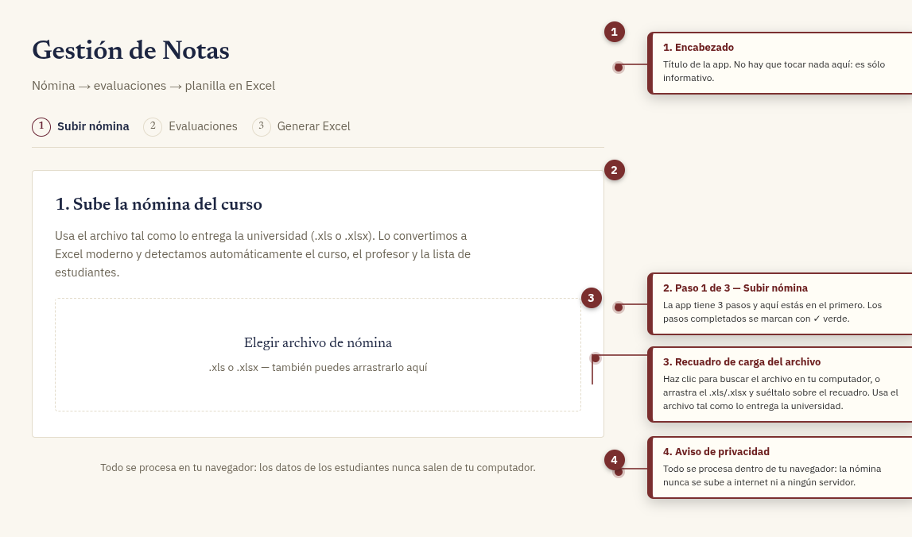
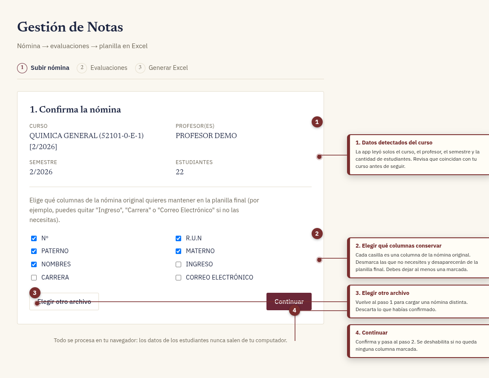
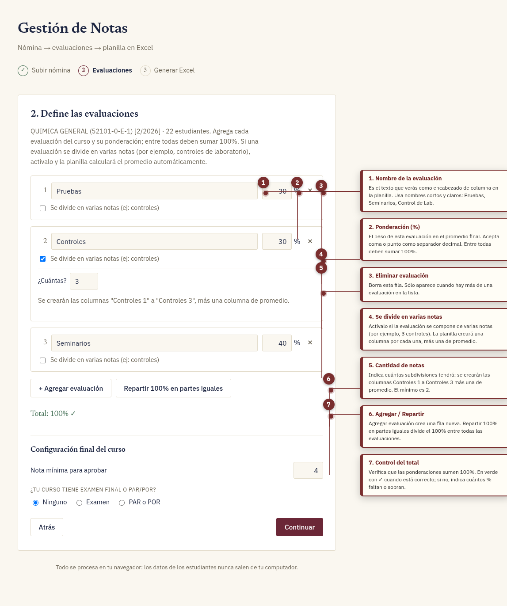
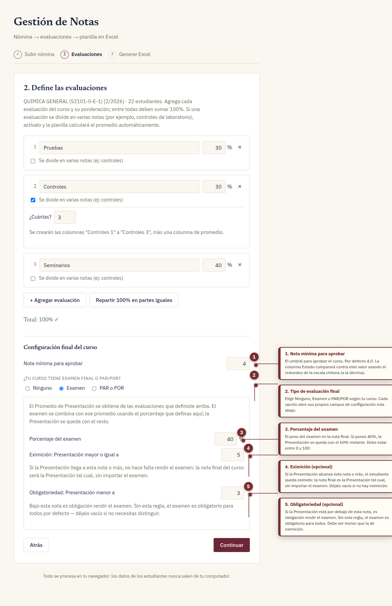
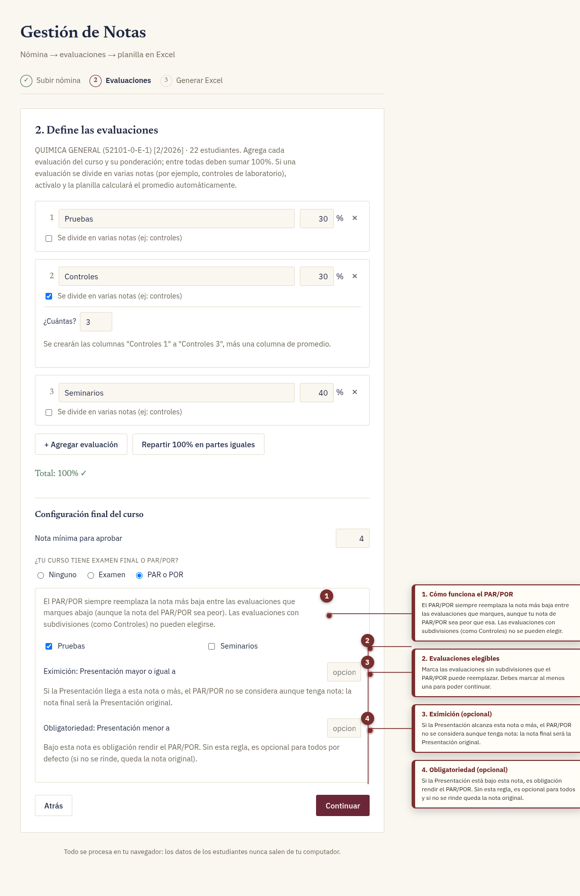
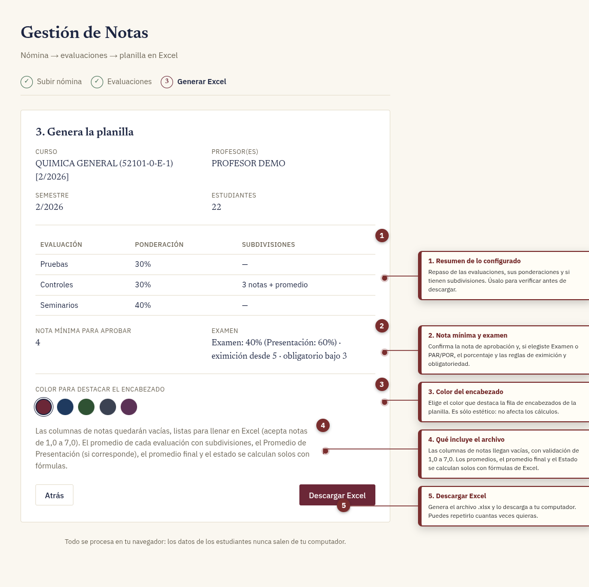
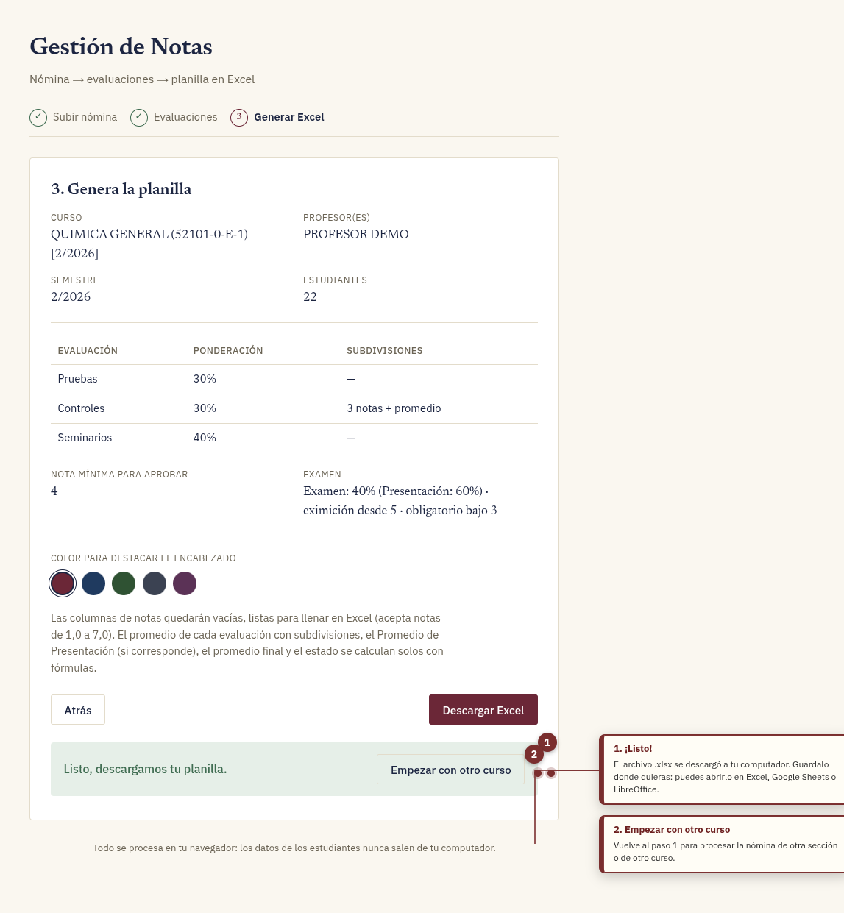
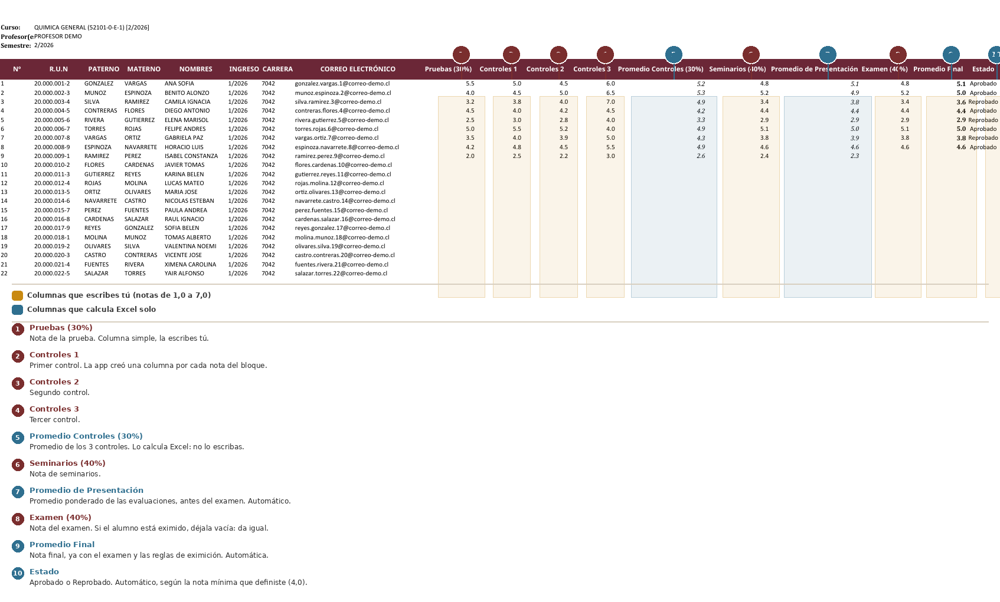

Tutorial: Cómo usar la app «Gestión de Notas»
Guía completa, paso a paso, con capturas anotadas de la aplicación y del archivo de Excel que genera.
Importante sobre la privacidad. Este tutorial usa una nómina de demostración con datos inventados (nombres, R.U.N. y correos ficticios, todos con dominio @correo-demo.cl). No se muestra ningún dato real de estudiantes. La app, además, procesa todo dentro del navegador: el archivo nunca sale de tu computador.
Antes de empezar
Qué hace la aplicación
La app transforma la nómina de estudiantes que entrega la universidad (archivo .xls o .xlsx) en una planilla de notas moderna y bienodotada: todas las columnas de evaluación ya creadas, listas para que ingreses las notas y para que Excel calcule los promedios solo.
Qué necesitas
- Un navegador web reciente (Chrome, Firefox, Edge o Safari).
- La nómina del curso en su formato original (
.xlso.xlsx). - Microsoft Excel, Google Sheets o LibreOffice para trabajar el archivo final.
Cómo abrir la aplicación
La aplicación está publicada en línea. Sólo tienes que abrir este link en el navegador:
→ plantilla-usach.vercel.app
No necesitas instalar nada. Funciona en cualquier navegador moderno, desde el computador o desde el celular.
Todo lo que harás es arrastrar el archivo y descargar el Excel.
El recorrido, en 3 pasos
| Paso | Qué haces | Resultado |
|---|---|---|
| 1 | Subes la nómina | La app lee el curso y la lista de estudiantes |
| 2 | Defines las evaluaciones | Quedan fijadas las columnas y su ponderación |
| 3 | Generas el Excel | Descargas la planilla lista para llenar notas |
Paso 1 · Subir la nómina

1. Encabezado
Sólo informativo: el título de la app y el subtítulo con el flujo general (Nómina → evaluaciones → planilla en Excel). No hay nada que configurar acá.
2. Indicador de pasos
La barra superior muestra las tres etapas. El paso en el que estás aparece resaltado y los pasos ya completados se marcan con un ✓ verde. Es sólo una referencia visual: puedes volver atrás en cualquier momento con el botón Atrás sin perder lo que ya configuraste.
3. Recuadro de carga del archivo
Aquí es donde entregas la nómina. Tienes dos formas de hacerlo:
- Clic en el recuadro → se abre el explorador de archivos y eliges la nómina.
- Arrastrar y soltar: toma el archivo desde tu carpeta y suéltalo encima del recuadro. Mientras lo arrastras, el recuadro se resalta para mostrarte que lo reconoce.
La app acepta el archivo tal como lo entrega la universidad: no necesitas convertirlo, renombrarlo ni abrirlo antes. Al leerlo detecta automáticamente:
- El nombre y código del curso
- El profesor o profesoras
- El semestre
- La lista de estudiantes, reconociendo la columna
R.U.N
Si aparece un error, normalmente significa que el archivo no tiene la columnaR.U.N(oRUT), que es la que le dice a la app dónde empieza la tabla de estudiantes. Revisa que sea una nómina del mismo formato que usa tu universidad.
4. Aviso de privacidad
Todo el procesamiento ocurre dentro de tu navegador. El archivo no se sube a internet, no se guarda en un servidor y no se envía a ninguna parte. El archivo final se genera también en tu navegador y se descarga directo a tu computador.
1.b · Confirmar la nómina
Apenas subes el archivo, la app te muestra qué entendió para que lo verifiques antes de seguir.

1. Datos detectados del curso
Curso, profesor(es), semestre y cantidad de estudiantes, leídos automáticamente del archivo. Revisa que coincidan con tu curso: si algo está mal, es más fácil detectarlo ahora que descubrirlo en la planilla final.
2. Elegir qué columnas conservar
Cada casilla es una columna de la nómina original, tal como viene. Puedes desmarcar las que no necesites en tu planilla de notas.
En el ejemplo de la captura se desmarcaron Ingreso, Carrera y Correo Electrónico: son datos que están en la nómina pero que normalmente no hacen falta para registrar notas.
Recomendación práctica: quédate con lo que uses routinely para identificar al alumno (Nº, R.U.N, PATERNO, MATERNO, NOMBRES) y quita lo demás. La planilla queda más manejable y evita exponer datos que no necesitas.
Debes dejar al menos una columna marcada; si las desmarcas todas, la app te avisa y no deja continuar.
3. Elegir otro archivo
Vuelve al paso 1 para cargar una nómina distinta (otra sección, otro curso). Descarta lo que habías confirmado.
4. Continuar
Confirma los datos y pasa al paso 2. El botón queda deshabilitado si queda alguna regla sin cumplir (por ejemplo, si no queda ninguna columna marcada).
Paso 2 · Definir las evaluaciones
Acá decides cómo se estructura el curso: qué evaluaciones hay, cuánto pesa cada una y cómo se calcula la nota final.

1. Nombre de la evaluación
El texto que aparecerá como encabezado de columna en la planilla final. Usa nombres cortos y claros: Pruebas, Seminarios, Control de Lab, Trabajo en grupo… Evita nombres tan largos que la columna se vea angosta.
2. Ponderación (%)
El peso de esa evaluación en el promedio final. Acepta coma o punto como separador decimal (33,33 y 33.33 funcionan igual).
Las ponderaciones de todas las evaluaciones deben sumar 100%. Si tienes muchas evaluaciones y no sabes cómo repartirlas, el botón Repartir 100% en partes iguales (punto 6) lo hace por ti.
3. Eliminar evaluación
Borra esa fila. Sólo aparece cuando tienes más de una evaluación en la lista; siempre vas a quedar con al menos una.
4. «Se divide en varias notas»
Activa esta casilla cuando una evaluación se compone de varias notas separadas y sólo su promedio cuenta. Ejemplos típicos:
- 3 controles de laboratorio → promediar los 3
- 2 seminarios → promediar ambos
- informes semanales → promediar los n informes
La app no te pide el nombre de cada nota: las numera automáticamente (Control 1, Control 2, …) y agrega una columna de promedio.
5. Cantidad de notas
Indica cuántas subdivisiones tendrá esa evaluación. En la captura se puso 3, así que la planilla creará las columnas Controles 1, Controles 2 y Controles 3, más una columna Promedio Controles (30%).
El mínimo es 2 (si es una sola nota, no marques la casilla: usa el paso 2 de esta misma lista).
6. Agregar evaluación / Repartir 100% en partes iguales
- + Agregar evaluación crea una fila nueva para otra evaluación del curso.
- Repartir 100% en partes iguales divide el 100% en el mismo número para todas. Si tienes 3 evaluaciones, las tres quedan con 33,33% cada una.
Detalle útil: cuando todas las evaluaciones tienen exactamente el mismo peso, la planilla usa un simple AVERAGE() en vez de una suma ponderada. Se ve más limpio en las fórmulas y es matemáticamente idéntico.
7. Control del total
Verifica que todo cuadre. En verde con ✓ significa que la suma es 100%. Si no, te dice cuántos porcentajes faltan o sobran, para que ajustes.
El botón Continuar permanece deshabilitado hasta que el total llegue a 100%, todas las evaluaciones tengan nombre y la configuración final sea válida.
Configuración final del curso
Esta sección aparece al final del paso 2 y controla dos cosas: la nota mínima para aprobar y el tipo de evaluación final.
Nota mínima para aprobar
El umbral con el que se decidirá si el alumno aprueba. Por defecto es 4,0, que es lo habitual en Chile. Si tu curso usa otro valor (por ejemplo 3,5 o 5,0), cámbialo acá.
Sobre el redondeo. La escala chilena redondea a la décima. Eso significa que un promedio real de 3,95 ya redondea a 4,0 y aprueba, aunque el número "crudo" esté por debajo del 4,0. La app tiene en cuenta esto y compara contra nota mínima − 0,05 sobre el promedio sin redondear, que es como lo hace el manual. Por eso no عليك el Promedio Final antes de mirar el Estado: las dos columnas pueden no coincidir en los casos límite, y es lo correcto.
Opción A · El curso tiene Examen

1. Nota mínima para aprobar
Lo mismo que en la sección anterior: el umbral de aprobación del curso.
2. Tipo de evaluación final
Elige entre Ninguno, Examen y PAR o POR. Al marcar Examen se abren los campos de abajo.
3. Porcentaje del examen
El peso del examen en la nota final. Si pones 40%, el examen vale el 40% y la Presentación se queda automáticamente con el 60% restante. No necesitas definir las dos.
4. Eximición (opcional)
Eximisión: Presentación mayor o igual a ___
Si la Presentación del alumno alcanza esta nota o más, queda eximido de rendir el examen: su nota final es la Presentación tal cual, sin importar qué haya sacado en el examen.
En la captura se puso 5, o sea: con Presentación 5,0 o más, el alumno aprueba con Presentación y no le afecta el examen.
Déjalo vacío si tu curso no tiene eximición.
5. Obligatoriedad (opcional)
Obligatoriedad: Presentación menor a ___
Si la Presentación está por debajo de esta nota, es obligación rendir el examen. En la captura se puso 3: un alumno con Presentación menor que 3,0 tiene que rendir el examen sí o sí.
Sin esta regla, el examen es obligatorio para todos.
Regla de validación: la nota de obligatoriedad debe ser menor que la de eximición (si no, quedarían rangos contradictorios). La app lo avisa y no deja continuar.
Opción B · El curso tiene PAR/POR

1. Cómo funciona el PAR/POR
El PAR/POR siempre reemplaza la nota más baja entre las evaluaciones que tengas marcadas — incluso si tu nota de PAR/POR es peor que esa nota. Es el criterio estándar: no se elige "la que más te conviene", sino que sustituye a la más baja.
Las evaluaciones con subdivisiones (como Controles) no pueden elegirse: el PAR/POR reemplaza una nota, no un promedio de varias.
2. Evaluaciones elegibles
Marca las evaluaciones sin subdivisiones que el PAR/POR puede reemplazar. Debes marcar al menos una para poder continuar. En la captura se marcó Pruebas y se dejó Seminarios sin marcar: el PAR/POR reemplazará la nota de Pruebas, no la de Seminarios.
3. Eximición (opcional)
Eximición: Presentación mayor o igual a ___
Si la Presentación alcanza esta nota o más, el PAR/POR no se considera aunque tenga nota: la nota final es la Presentación original.
4. Obligatoriedad (opcional)
Obligatoriedad: Presentación menor a ___
Si la Presentación está bajo esta nota, es obligación rendir el PAR/POR.
Sin esta regla, el PAR/POR es opcional para todos: si el alumno no lo rinde, queda la nota original sin reemplazo.
Las reglas de eximición y obligatoriedad del PAR/POR se calculan sobre la Presentación original, es decir, antes de aplicar el reemplazo. Es lo que permite que un alumno con buena Presentación se exima aunque el PAR/POR le saliera mal.
Paso 3 · Generar y descargar la planilla
Antes de descargar, la app te muestra un resumen de todo lo que configuraste.

1. Resumen de lo configurado
Una tabla con cada evaluación, su ponderación y si tiene subdivisiones. Úsalo como comprobación final: si algo no es lo que esperabas, haz clic en Atrás y corrígelo antes de descargar.
2. Nota mínima y examen
Confirma la nota de aprobación y, si elegiste Examen o PAR/POR, el porcentaje y las reglas de eximición y obligatoriedad, en un resumen legible (p. ej. Examen: 40% (Presentación: 60%) · eximición desde 5 · obligatorio bajo 3).
3. Color del encabezado
Elige el color que destaca la fila de encabezados de la planilla. Hay 5 opciones. Es puramente estético: no afecta ningún cálculo, así que elige el que más te guste.
4. Qué incluye el archivo
Las columnas de notas llegan vacías, listas para llenar en Excel, y aceptan notas de 1,0 a 7,0 (la escala chilena). El promedio de cada evaluación con subdivisiones, el Promedio de Presentación (si corresponde), el Promedio Final y el Estado se calculan solos con fórmulas.
5. Descargar Excel
Genera el archivo .xlsx y lo descarga a tu computador. El nombre del archivo se arma solo con el nombre del curso (p. ej. Notas_QUIMICA_GENERAL_(52101-0-E-1)_[2-2026].xlsx).
Si cambiaste de opinión, puedes volver atrás o simplemente volver a descargar: el botón se puede usar las veces que quieras.
La descarga

1. ¡Listo!
Aparece el aviso verde de que el archivo se descargó. Guárdalo donde quieras: funciona en Excel, Google Sheets y LibreOffice.
2. Empezar con otro curso
Vuelve al paso 1 para procesar la nómina de otra sección o de otro curso. Útil si tienes varias secciones del mismo ramo.
El archivo de Excel resultante
Este es el aspecto de la planilla una vez que le ingressas las notas (en la versión HTML puedes desplazarla horizontalmente para verla completa):

Columnas que escribes tú 🟠
Sólo las notas. Cada celda tiene validación: si escribes algo fuera del rango 1,0 a 7,0, Excel te avisa y no lo acepta. Es la escala chilena.
- 1
Pruebas (30%)— la nota de la prueba - 2
Controles 1, 3Controles 2, 4Controles 3— una columna por cada control, porque activaste «se divide en varias notas» con 3 - 6
Seminarios (40%)— la nota de seminarios - 8
Examen (40%)— la nota del examen. Si el alumno está eximido, déjala vacía: da igual, la fórmula lo ignora
Columnas que calcula Excel solo 🔵
No las escribas ni las borres. Contienen fórmulas vivas que se recalculan solas a medida que agregas notas:
- 5
Promedio Controles (30%)— promedio de los 3 controles - 7
Promedio de Presentación— promedio ponderado de todas las evaluaciones, antes de aplicar el examen - 9
Promedio Final— la nota final del curso, ya con el examen y las reglas de eximición y obligatoriedad - 10
Estado—AprobadooReprobado, con fondo verde o rojo automático
Cómo se calcula el Promedio Final
Con la configuración del ejemplo (Pruebas 30% · Controles 30% · Seminarios 40% · Examen 40%, eximición desde 5, obligatorio bajo 3):
Promedio de Presentación = Pruebas×0,30 + Prom.Controles×0,30 + Seminarios×0,40
Si Presentación ≥ 5 → Promedio Final = Presentación (eximido)
Si Presentación < 3 → se espera el examen:
sin nota de examen → queda en blanco
con nota → Presentación×0,60 + Examen×0,40
En cualquier otro caso → sin examen: Promedio Final = Presentación
con examen: Presentación×0,60 + Examen×0,40Fíjate en la fila 9 de la planilla de ejemplo: el alumno tiene Presentación 2,3 (obligatoria rinde examen), no tiene nota de examen, y por eso su Promedio Final y su Estado quedan en blanco. La planilla no te muestra un número inventado: te está avisando que falta información.
Detalles de la planilla que te van a servir
- Panel congelado: las primeras 3 columnas y las 5 primeras filas quedan fijas. Al desplazarte hacia la derecha en una lista larga de estudiantes, siempre ves el R.U.N. y los nombres, y el encabezado con los nombres de las columnas.
- Filas 1 a 3: el curso, el profesor y el semestre que se leyeron de la nómina.
- Columnas ajustadas automáticamente al contenido, para que nada quede cortado.
- Las fórmulas se recalculan solas: si más tarde cambias una nota, se actualizan el promedio, el estado y los colores.
Preguntas frecuentes
¿Puedo cambiar algo después de descargar? Sí. Puedes modificar las notas en Excel con normalidad. Si necesitas cambiar la estructura (agregar una evaluación, cambiar ponderaciones, agregar un examen), vuelve a generar el archivo desde cero: la app no guarda la configuración, así que tendrás que redefinirla.
¿La app guarda mi configuración? No. Cada vez que recargas la página empiezas de cero. Las notas que ingreses sí quedan en tu archivo de Excel, que es tu copia personal.
¿Y mis datos personales? Todo se procesa en el navegador. El archivo de la nómina nunca se sube a internet. El .xlsx que descargas se genera también en tu navegador.
¿Sirve para notas de escala distinta? La app valida el rango 1,0 a 7,0, que es la escala chilena.
Me dice que no encuentra la columna R.U.N. La app busca una columna llamada R.U.N (o RUT) para saber dónde empieza la tabla de estudiantes. Si tu universidad exporta las nóminas con otro formato, hay que ajustar el archivo src/lib/parseRoster.ts.
¿Cómo saco una columna de la planilla final? Desmárcala en el paso 1 (confirmar nómina), antes de continuar.
¿Puedo usar la planilla en Google Sheets? Sí. Las fórmulas estándar y la validación de rango son compatibles. Al subirla, Google Sheets recalcula todo automáticamente.